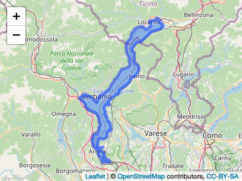

ReLTER is an R package that allows interact with software (e.g. DEIMS-SDR) implemented by eLTER Research Infrastructure (RI) and manage the data/information shared by them.
üìî Citation
To cite ReLTER please use: Alessandro Oggioni. (2021). oggioniale/ReLTER: v0.2.0 (0.2.0). Zenodo. https://doi.org/10.5281/zenodo.5576813
or:
@software{alessandro_oggioni_2021_5576813,
author = {Alessandro Oggioni},
title = {oggioniale/ReLTER: v0.2.0},
month = oct,
year = 2021,
publisher = {Zenodo},
version = {0.2.0},
doi = {10.5281/zenodo.5576813},
url = {https://doi.org/10.5281/zenodo.5576813}
}üìñ Documentation
You can visit ReLTER website at oggioniale.github.io/ReLTER/ for obtain documentation about installation and examples of use.
⏬ Installation
You can install the development version of ReLTER from GitHub with:
install.packages("devtools")
devtools::install_github("oggioniale/ReLTER")üìù Examples
Some examples of the possible capabilities of this library is given below. In these examples you can see the interaction, througth API, with DEIMS-SDR.
The get_site_info function, with category Boundaries, creates a map overlaying the boundaries of the site (e.g. Lake Maggiore) thanks to the information on geographical aspects provided by DEIMS-SDR.
library(dplyr)
siteBoundaries <- ReLTER::get_site_info(
deimsid = 'https://deims.org/f30007c4-8a6e-4f11-ab87-569db54638fe',
category = "Boundaries"
)
#> Found 1 records... Imported 1 records. Simplifying...
#> Found 1 records... Imported 1 records. Simplifying...
leaflet::leaflet(siteBoundaries) %>%
leaflet::addTiles() %>%
leaflet::addPolygons()
siteBoundaries
#> Simple feature collection with 1 feature and 8 fields
#> Geometry type: MULTIPOLYGON
#> Dimension: XY
#> Bounding box: xmin: 8.47803 ymin: 45.72556 xmax: 8.860755 ymax: 46.18081
#> Geodetic CRS: WGS 84
#> # A tibble: 1 × 9
#> title uri boundaries geoCoord country geoElev.avg geoElev.min
#> <chr> <chr> <MULTIPOLYGON [°]> <chr> <list> <dbl> <int>
#> 1 Lago… http… (((8.615976 45.72628, 8.… POINT (… <chr [… 194. 186
#> # … with 2 more variables: geoElev.max <int>, geoElev.unit <chr>The get_network_parameters function creates a list of parameters collected by a network (e.g. LTER-Italy). Information always gathered from what is indicated in the different sites on DEIMS-SDR.
| parameterLabel | parameterUri |
|---|---|
| atmospheric parameter | http://vocabs.lter-europe.net/EnvThes/20937 |
| ecosystem parameter | http://vocabs.lter-europe.net/EnvThes/20939 |
| conductivity | http://vocabs.lter-europe.net/EnvThes/22089 |
| dissolved nutrient | http://vocabs.lter-europe.net/EnvThes/22107 |
| dissolved organic carbon in water | http://vocabs.lter-europe.net/EnvThes/10307 |
| ecosystem structure | http://vocabs.lter-europe.net/EnvThes/21475 |
| inorganic nutrient content | http://vocabs.lter-europe.net/EnvThes/22137 |
| percent carbon | http://vocabs.lter-europe.net/EnvThes/22181 |
| percent organic carbon | http://vocabs.lter-europe.net/EnvThes/22183 |
| total carbon | http://vocabs.lter-europe.net/EnvThes/22296 |
| … | … |
The get_dataset_info function provides to a table with information about specific dataset shared through DEIMS-SDR.
#> Found 1 records... Imported 1 records. Simplifying...#> Simple feature collection with 1 feature and 33 fields
#> Geometry type: POLYGON
#> Dimension: XY
#> Bounding box: xmin: 11.88721 ymin: 43.20518 xmax: 15.86426 ymax: 45.91294
#> Geodetic CRS: WGS 84
#> # A tibble: 1 × 34
#> title abstract keywords uri type dateRange.from dateRange.to relatedSite
#> * <chr> <chr> <list> <chr> <chr> <chr> <lgl> <list>
#> 1 LTER … The prese… <df [5 … http… data… 1965-01-01 NA <df [1 × 4…
#> # … with 26 more variables: contacts.corresponding <list>,
#> # contacts.creator <list>, contacts.metadataProvider <lgl>,
#> # observationParameters <list>, observationSpecies <list>, dataPolicy <list>,
#> # doi <chr>, onlineLocation <list>, legal.accessUse <list>,
#> # legal.rights <lgl>, legal.legalAct <lgl>, legal.citation <lgl>,
#> # method.instrumentation <lgl>, method.qualityAssurance <lgl>,
#> # method.methodUrl <list>, method.methodDescription <list>, …The get_site_info function, with category = “RelateRes”, provides a list of related resources associated with a site within DEIMS-SDR.
#> Found 1 records... Imported 1 records. Simplifying...
#> Found 1 records... Imported 1 records. Simplifying...
#> relatedResourcesTitle
#> 1 Biovolume of Phytoplankton in Lake Maggiore site code IT_SI001137_within the period 1981 - 2010
#> 2 Atmospheric deposition in Pallanza, Lake Maggiore watershed, 1980-2018
#> 3 Phytoplankton_Biomass_Lake Maggiore_Ghiffa_station-1984-2018
#> 4 Water chemistry of Lake Maggiore, Ghiffa station, 1988-2018
#> 5 Transparency (Secchi depth) of Lake Maggiore, Ghiffa station, 1988-2018
#> 6 Chlorophyll a_Lake_Maggiore_Ghiffa_Station-1984-2018
#> 7 Water discharge of River Ticino, Lake Maggiore outlet, 1988-2018
#> relatedResourcesChanged
#> 1 2021-08-25T16:38:25+0200
#> 2 2020-12-13T20:06:48+0100
#> 3 2020-12-16T10:46:15+0100
#> 4 2021-11-03T06:10:14+0100
#> 5 2020-12-13T20:10:34+0100
#> 6 2021-01-10T21:48:49+0100
#> 7 2021-07-21T12:35:07+0200
#> uri
#> 1 https://deims.org/dataset/d9e94776-e7a8-11e2-a655-005056ab003f
#> 2 https://deims.org/dataset/0ce46362-0aab-482a-b1f0-a444a5dada39
#> 3 https://deims.org/dataset/0ab8425a-d574-4575-8ba9-5275c607b0c5
#> 4 https://deims.org/dataset/69564188-89de-4879-ad88-4aa97c1d005d
#> 5 https://deims.org/dataset/e538c743-2149-49e3-9025-14a04ea7c90d
#> 6 https://deims.org/dataset/c857c8e2-48aa-4dcd-a7fb-e089bd4c5c4e
#> 7 https://deims.org/dataset/fb3a8fec-0c1f-4c3a-81d5-364c7e6078c4The produce_site_parameters_waffle function provides a grouping of parameters, declared as measured within a site, in a waffle chart representation.
ReLTER::produce_site_parameters_waffle(
deimsid = "https://deims.org/f30007c4-8a6e-4f11-ab87-569db54638fe"
)
#> Found 1 records... Imported 1 records. Simplifying...
#> Found 1 records... Imported 1 records. Simplifying...
#> # A tibble: 11 × 4
#> parameterGroups n freq label
#> <chr> <int> <dbl> <chr>
#> 1 agricultural parameter 1 0.0105 1.1%
#> 2 atmospheric parameter 14 0.147 14.7%
#> 3 biological parameter 8 0.0842 8.4%
#> 4 chemical parameter 24 0.253 25.3%
#> 5 ecosystem parameter 23 0.242 24.2%
#> 6 genetic parameter 2 0.0211 2.1%
#> 7 landscape parameter 4 0.0421 4.2%
#> 8 physical parameter 1 0.0105 1.1%
#> 9 remote sensing parameter 1 0.0105 1.1%
#> 10 soil parameter 1 0.0105 1.1%
#> 11 water parameter 16 0.168 16.8%üë©‚Äçüíª Persons involved ü뮂Äçüíª
Alessandro Oggioni https://orcid.org/0000-0002-7997-219X (CNR, Institute for Electromagnetic Sensing of the Environment - IREA)
Paolo Tagliolato https:://orcid.org/0000-0002-0261-313X (CNR, Institute for Electromagnetic Sensing of the Environment - IREA)
Micha Silver https://orcid.org/0000-0002-1128-1325 (Ben Gurion University - BGU)
For a exhaustive list of contributors please visit authors page.